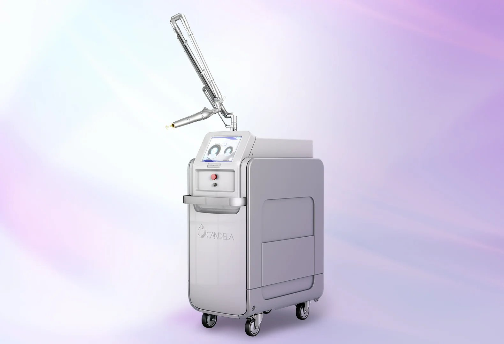
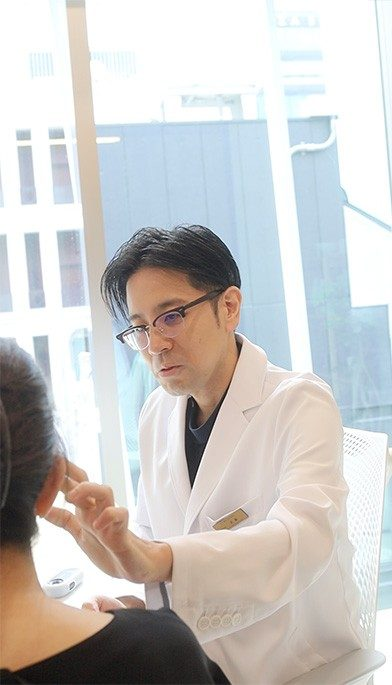
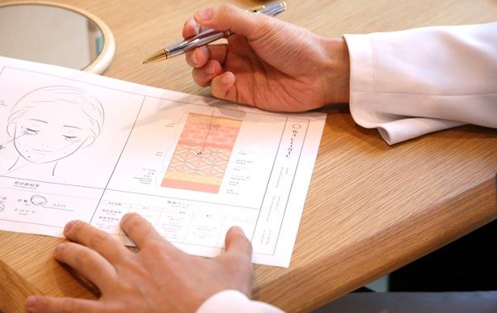
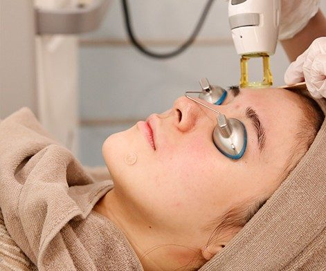
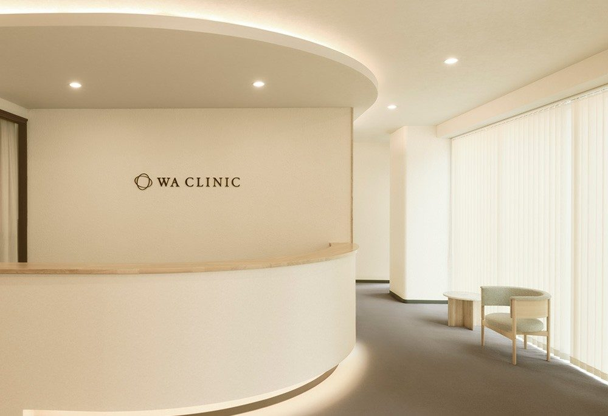
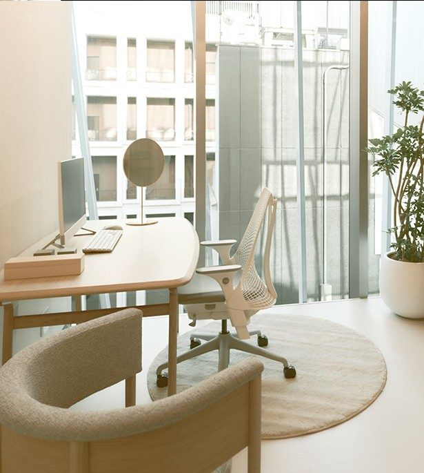
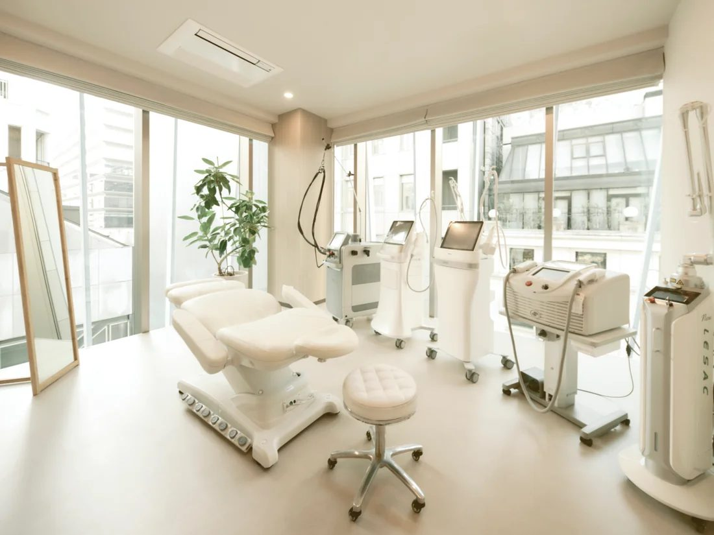
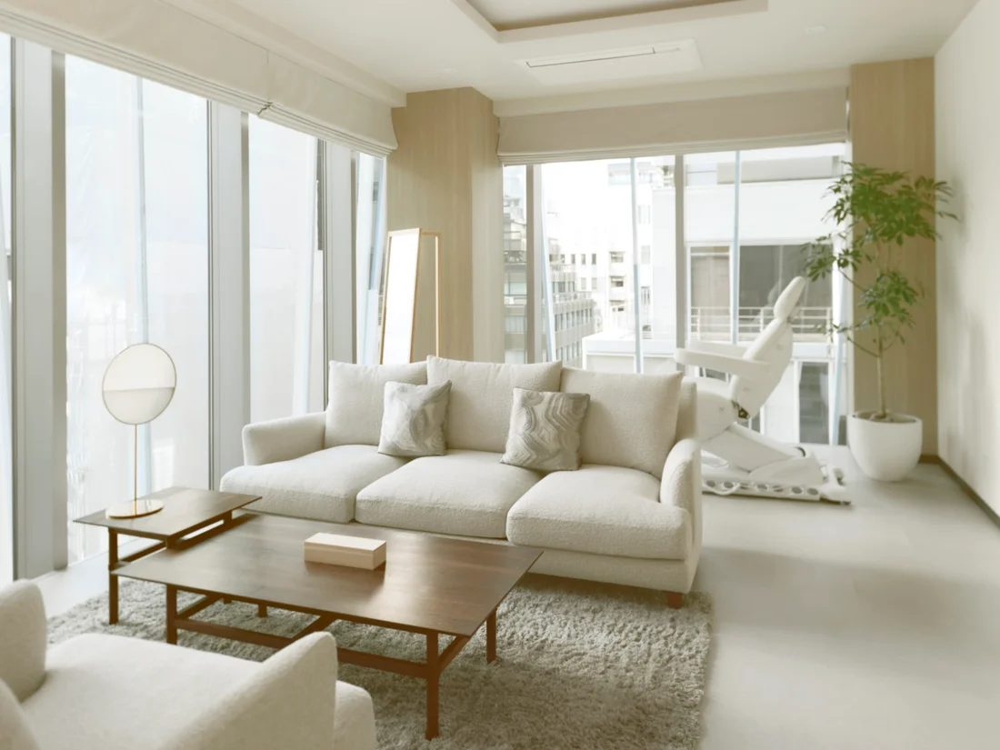

シミ・くすみ
メイクで隠すだけでなく、肌の状態から見直したい。

銀座駅B3出口 徒歩1分 ※画像はイメージです鏡を見るたび、気になる肌悩みに。
肌状態に合わせたレーザーで、透明感のある肌を目指す。
VISIA肌診断・カウンセリング込み
当院を初めて受診される方・おひとり様1回
専用WEBフォーム、または予約時に初回体験希望とお伝えください
YOUR SKIN CONCERNS
メイクで隠すだけでなく、肌の状態から見直したい。
肌のトーンのばらつきについて相談したい。
シミの種類と、適した治療を医師に確認したい。
スポット照射との違いを知って選びたい。
痛みやダウンタイムを確認してから始めたい。
まずは全顔1回から、施術を体験したい。
まずは医師が肌を診察。今の肌に合う治療を一緒に考えます。
YOUR FIRST EXPERIENCE

肌のお悩みや治療歴を伺い、施術の適応・費用・注意事項を確認します。

お肌を撮影・記録し、肌の状態を確認。診察や治療についての相談に役立てます。

医師が適応を確認したうえで、看護師が肌の状態に合わせてお顔全体へトーニング照射を行います。
カウンセリング + VISIA肌診断 + ピコトーニング(全顔)1回
初診の方限定・おひとり様1回。専用Webフォームからご予約、またはご予約時に「初回体験を希望」とお申し出ください。事前のお申し出がない場合は通常料金となります。 施術は医師が適応を確認したうえで行います。
ABOUT THE TREATMENT
PicoWayを用いて、低出力のレーザーをお顔全体に照射する治療です。メラニンに働きかけ、シミ・くすみ・色ムラの改善を目指します。
施術の適応や設定は、医師が肌の状態を確認して判断します。効果や経過には個人差があり、1回での改善を保証するものではありません。
この初回体験は、お顔全体に低出力で照射するピコトーニングです。シミを狙うスポット照射やフラクショナルは含まれません。
YOUR TREATMENT PLAN
VISIAの撮影と医師の診察をもとに、肌悩みと施術の適応を確認します。
初回体験は15,000円(税込)。施術後の肌の反応や過ごし方もご案内します。
2〜4週間に1回。肝斑の治療では4週間以上の間隔を目安に、医師が判断します。 回数の目安は5〜10回ですが、必要回数・効果には個人差があります。
継続は任意です。上記は治療計画の目安で、症例や効果を示すものではありません。
THE WA CLINIC APPROACH


WA CLINIC / GINZA
気になる症状だけでなく、肌の状態や治療歴も確認。お一人おひとりに必要な治療を検討します。
VISIAの撮影・記録を活用し、肌の状態を確認。ご自身の肌を知ることからケアを始めます。
施術後の肌の状態や医師の説明を踏まえて、ご自身のタイミングで継続をご検討いただけます。
銀座駅B3出口から徒歩1分。有楽町駅からも徒歩7分で、お仕事やお買い物の前後に通いやすい立地です。

MESSAGE FROM WA CLINIC
Bunnosuke Muto, M.D.
「美しさは、健康の上にしか成り立たない」
WA CLINICでは、美容皮膚科とウェルエイジングの視点から、お一人おひとりの肌と向き合っています。
今、気になっていること。これまでに受けてきた治療。これから、どのような肌を目指したいか。肌の状態だけでなく、ご希望や生活に合わせて、治療について一緒に考えます。
公式サイトの医師紹介を見る ↗PRICE & CONDITIONS
すべて税込。自由診療のため医療保険は適用されません。
通常施術料金 24,800円 (税込)
15,000円税込
通常施術料金との差額 9,800円
カウンセリング・VISIA代込み
初診の方 / おひとり様1回
ピコトーニング(全顔)：24,800円/回。VISIA肌診断単独：5,500円。初診料・再診料：0円。
スポット照射は別施術です。通常6,600円/ショット。初回体験には含まれません。
2〜4週間に1回。肝斑の治療では4週間以上の間隔を目安に、医師が判断します。 5〜10回を目安に、必要な回数や費用は診察時に確認します。
初診の方限定・おひとり様1回。専用Webフォームからご予約、またはご予約時に「初回体験を希望」とお申し出ください。事前のお申し出がない場合は通常料金となります。
YOUR VISIT

所要時間の目安
60–75 min診察・肌診断を含む目安です。
診察内容や肌の状態により異なります。
肌の状態や治療歴、内服・外用薬などを確認し、適応・施術内容・費用をご説明します。
メイクを落とし、清潔な状態で施術を受ける準備をします。
肌診断機で肌を撮影・記録し、状態を確認します。
医師が適応を確認したうえで、看護師が肌の状態に合わせてお顔全体へトーニング照射を行います。
お肌を落ち着かせ、保湿・紫外線対策など施術後の注意事項をご案内します。
AFTER YOUR TREATMENT
日焼け止めなどで紫外線対策を行ってください。
肌を強くこすらず、保湿を心がけてください。赤みや刺激がある場合は医師の指示に従ってください。
症状が強い場合や長引く場合は、自己判断せず当院へご連絡ください。
QUESTIONS & ANSWERS
ピコトーニング(全顔)1回、カウンセリング・VISIA肌診断が含まれます。初診の方限定・おひとり様1回です。スポット照射は別施術です。通常6,600円/ショット。初回体験には含まれません。
初診の方限定・おひとり様1回。専用Webフォームからご予約、またはご予約時に「初回体験を希望」とお申し出ください。事前のお申し出がない場合は通常料金となります。
肌診断は初回体験の施術とセットです。肌診断のみは通常5,500円です。施術ができない場合の費用は、検査・施術前にご確認ください。
輪ゴムで弾かれるような刺激を感じる場合があります。感じ方には個人差がありますので、痛みが気になる場合は事前にご相談ください。
赤み、かゆみ、湿疹、炎症性色素沈着、白斑、肝斑の悪化、点状出血、軽度の水疱(火傷)などが生じる可能性があります。程度や期間には個人差があります。予定がある場合は診察時にご相談ください。
2〜4週間に1回。肝斑の治療では4週間以上の間隔を目安に、医師が判断します。 5〜10回が目安ですが、必要な回数・経過には個人差があります。1回での効果を保証するものではありません。
基本的には当日から可能ですが、赤みや刺激など肌の状態により医師の指示に従ってください。
妊娠中・授乳中、光線過敏症、てんかん発作のある方、治療部位に皮膚疾患や感染症のある方、ケロイド体質、強い日焼け直後、心臓ペースメーカーをご使用の方など。持病や服薬、他の施術歴を診察時にお伝えください。
内服薬・外用薬を診察時にお伝えください。薬の使用や休薬は自己判断せず、医師の指示を確認してください。
施術の種類や時期、肌の状態によって異なります。併用の可否・間隔・追加費用は医師にご確認ください。
男性もご相談いただけます。肌の状態とお悩みに合わせて施術の適応を確認します。
現金、各種クレジットカード(VISA、Mastercard、JCB、AMEX、Diners)、銀聯、WeChatPay、AliPayをご利用いただけます。
専用駐車場はありません。公共交通機関または近隣のコインパーキングをご利用ください。銀座駅B3出口から徒歩1分です。
TREATMENT INFORMATION
PicoWayを用いて、低出力のレーザーをお顔全体に照射する治療です。メラニンに働きかけ、シミ・くすみ・色ムラの改善を目指します。 自由診療のため医療保険は適用されません。
2〜4週間に1回。肝斑の治療では4週間以上の間隔を目安に、医師が判断します。 5〜10回が目安。効果には個人差があり、同様の結果を保証するものではありません。
赤み、かゆみ、湿疹、炎症性色素沈着、白斑、肝斑の悪化、点状出血、軽度の水疱(火傷)など。症状が強い、または長引く場合は当院へご連絡ください。
妊娠中・授乳中、光線過敏症、てんかん発作のある方、治療部位に皮膚疾患や感染症のある方、ケロイド体質、強い日焼け直後、心臓ペースメーカーをご使用の方など。適応は診察時に確認します。
紫外線対策と保湿を行い、強い摩擦を避けてください。メイクや外用薬の使用は、肌の状態と医師の指示に従ってください。
初回：ピコトーニング(全顔)1回15,000円。カウンセリング・VISIA代込み。初診の方限定・おひとり様1回。通常施術：24,800円/回。スポット照射は別施術です。通常6,600円/ショット。初回体験には含まれません。
ACCESS / GINZA

FIRST STEP
初診の方限定・おひとり様1回。専用Webフォームからご予約、またはご予約時に「初回体験を希望」とお申し出ください。事前のお申し出がない場合は通常料金となります。 施術は医師が適応を確認したうえで行います。